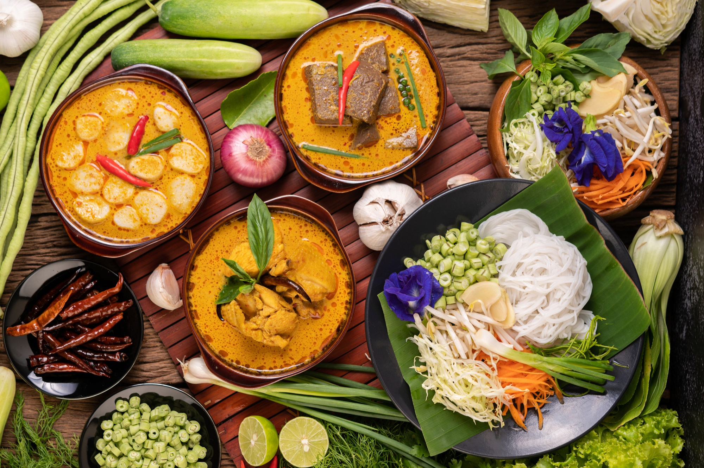
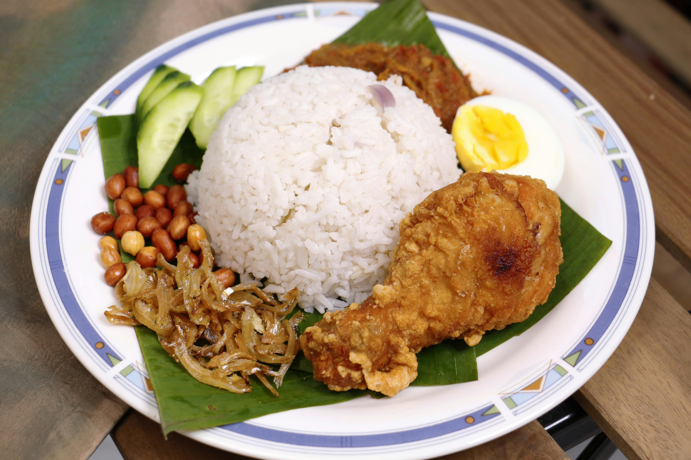
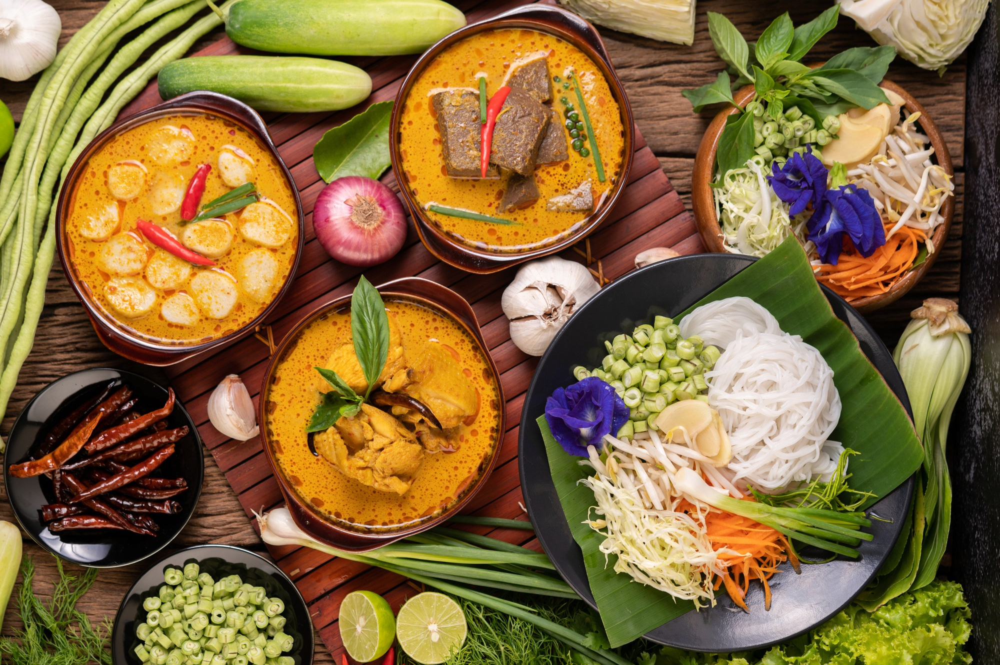
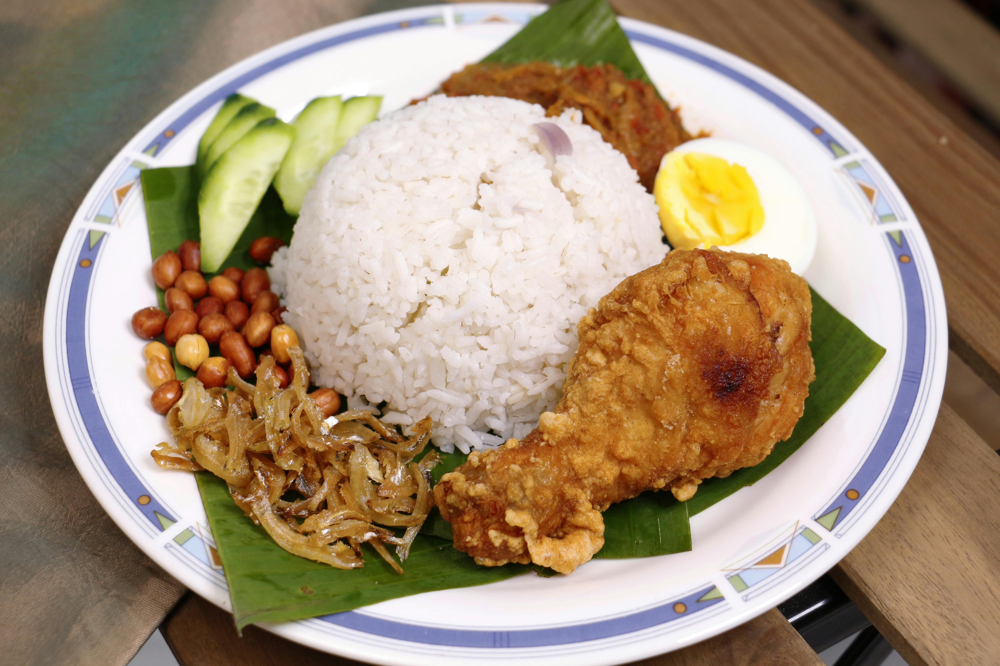

Temukan Kelezatan
Masakan Indonesia yang Autentik
Jelajahi berbagai resep tradisional dan modern yang kaya akan rempah dan rasa, membawa Anda ke dalam perjalanan kuliner yang tak terlupakan.
 


